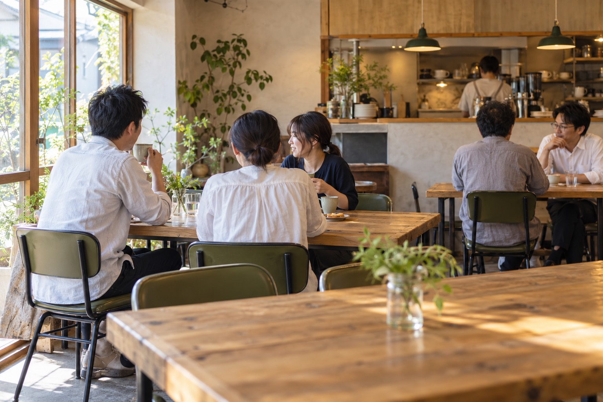
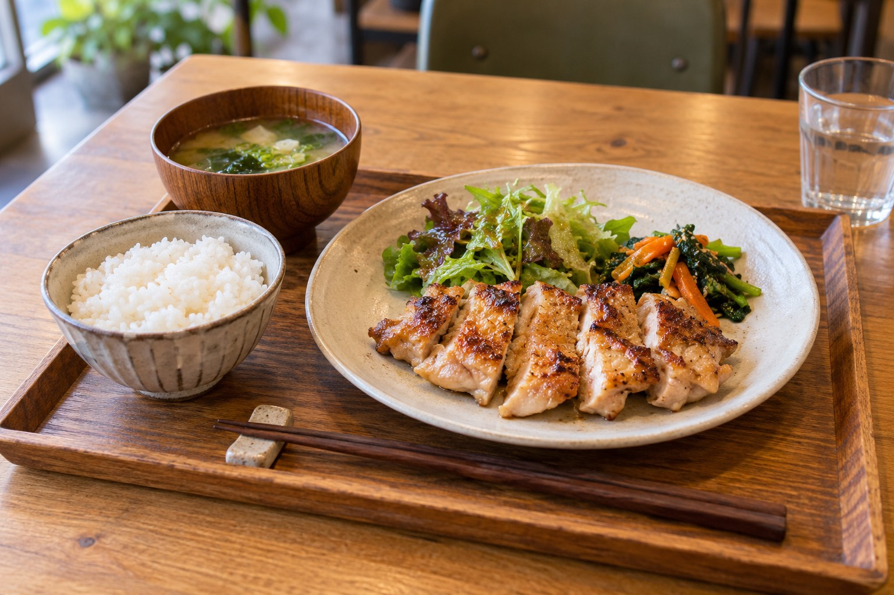

お店の基本情報
- 営業時間
- 準備中
- 定休日
- 準備中
- 駐車場
- 準備中
- 場所
- 三木町上高岡 地図を見る
地域の、
いつもの居場所に。
ひとりでも、同僚とでも。近くで働く人も、ご近所の人も。肩の力を抜いて、気軽に集まれる場所を目指しています。
少しラフで、きちんと清潔。仕事着のまま立ち寄る日も、ゆっくり過ごしたい日も、それぞれのペースで。
もう少し読む
年齢や性別を問わず、普段使いできるお店に。話したい人も、ひとりの時間を楽しみたい人も、気負わずいられる場所でありたいと考えています。
人との出会いや会話が、誰かの夢や目標に向かうきっかけになる。そんな地域のつながりを育てていきます。
働く私たちにとっても、大切な居場所に。安心して意見や「やってみたいこと」を話し、お互いを応援し合えるチームを目指しています。
Capriceの一日
時間によって、少しずつ違う顔。
どの時間にも、気楽にどうぞ。